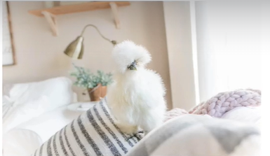
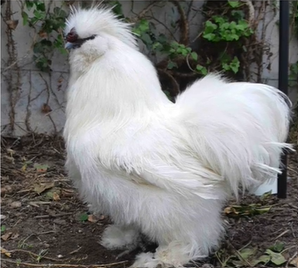

0 to 0
Use the buttons below to control scores.
You have to enter a name to add it in the list of names:

The Silkie (sometimes spelled Silky) is a breed of chicken named for its typically fluffy plumage, which is said to feel like silksilk and satin. The breed has several other unusual qualities, such as black skin and bones, blue earlobes, and five toes on each foot.
They are often exhibited in poultry shows, and appear in various colors. In addition to their distinctive physical characteristics, Silkies are well known for exceptionally broody and care for young well.
It is unknown exactly where or when these fowl with their singular combination of attributes first appeared, but the most documented point of origin is ancient China.



Ping-Pong Score Keeper
Manage your game scores and see who wins
Use the buttons below to control scores.